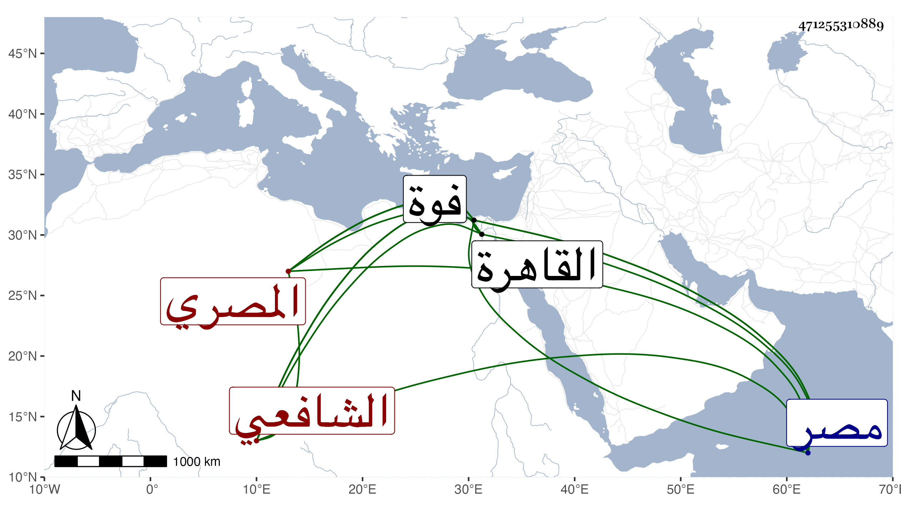

0902Sakhawi.DawLamic.ITO20230111-ara1.EIS1600.471255310889
Biography ID: 471255310889
473
أبو النجا بن خلف بن محمد بن محمد بن علي المصري الشافعي الماضي أبوه نزيل فوة . ولد في سنة تسع وأربعين وثمانمائة بمصر العتيقة ونشأ بالمدرسة الخليلية منها فحفظ القرآن وجانبا من كتب الحنفية فقها وأصولا ثم شفعه أبوه فقرأ الحاوي الصغير وجمع الجوامع والمفيد في النحو وتحول معه إلى فوة ولازمه في العلوم وقرأ عليه المجرد في غريب الحديث ثم شرح الشافية للسيد الركن ثم ألفية النحو وشرحيها لابن الناظم والمرادي ثم الرضى ثم المتوسط ولم يكمله ثم شرح التسهيل للمصنف ثم المختصر والمطول ثم شرح الصحائف للسمرقندي في علم الكلام ثم شرح الكنز للزيلعي وشرح المنار في أصول الحنفية وغير ذلك من تفسير وعربية ثم أخذ عن الزين قاسم شرح ألفية العراقي وعن التقي الحصني الشمسية مع شرحها للقطب وحاشية الشريف كلها في المنطق وقطعة من شرح الطوالع ثم على الكمال إمام الكاملية شرحه على البيضاوي وأخذ عن العبادي الحاوي وبعض شرحه للقونوي وكذا أخذ عن البكري بعض القونوي وأجازه كل منهما بالإفتاء والتدريس في ذي القعدة سنة ست وسبعين وعن الجوجري وابن قاسم وتزوج ابنته ثم فارقها وتميز في الفقه والأصلين والعربية والصرف والمنطق والتصوف والتفسير والوعظ وغيرها مع البراعة في الموسيقا عملا وعلما وأذن له الحصني في إقراء الكلام والمنطق والعبادي والبكري بالإفتاء والتدريس واستقر في مشيخة جامع ابن نصر الله بفوة وقطنها يدرس ويفتي وصارت له وجاهة مع اهتمامه بالخير وإزالة المنكر وحج وقدم القاهرة غير مرة وعقد مجلسا للتفسير بجامع الأزهر في أيام الجمع بعد صلاتها أشهرا واستحسنت مجالسه وسمعها جمع من الأعيان بل عمل منظومة في العقائد تزيد على ألف بيت وشرحها وقرض له المتن الكافياجي وبالغ في الثناء عليه وكذا نظم المغنى وشرحه والشافية في الصرف والتلخيص وكتب حاشية على شرح الحاوي للقونوي في أربع مجلدات بل له ديوان نظم في السلوك وبلغني أنه كتب على الفقه الأكبر للإمام أبي حنيفة في العقائد شرحا في ليلة إجابة لسؤال الأمير تنبك قرأ فيه وشهد له بذلك فالله أعلم وتردد لكثير من الجوامع الكبار والمشاهد العظام لعمل المواعيد وتزايد الإقبال عليه بحيث حسده الجلال بن الأسيوطي لإقبال أهل خطته بجامع طولون ونحوها عليه ولم يلتفت الناس إليه بل أشبعوه كلاما وملاما وحملوا صاحب الترجمة على عقد المجلس بالبيبرسية محل جلوس هذا المسكين وما تخلف أحد عن شهود هذا المشهد وجيء لحاجب الحجاب بجماعة من العوام الذين يعارضون صاحب الترجمة بل وطلب الجلال وكانت حكايات شرحت في الحوادث ومن نظمه
| سلطان حسنك قد سبى أسرى المهج | وأباح إتلاف النفوس ولا حرج |
| وجمال وجهك قد بدا متحجبا | فسبى النهى لما تبرقع بالبلج |
| وأتت له الأرواح تهرع سجدا | والسر سار له مجدا في الدلج |
| حسن بديع للطائف آخذ | بتلطف كل يلبي في نهج |
| فمتيم كتم الصبابة غيرة | ومهيم بغرامه جهرا لهج |
| ومحجب يشكو حرارة هجره | ويبث ما يلقاه من حرق الوهج |
| ومنعم بالوصل يشكو برده | ملأ الوجود مسرة حين ابتهج |
| ومموه يبدي الغرام تغزلا | فكأنه يصف الرشاقة والدعج |
| عجبا لهاتيك القدود وفتكها | ولسحر ألحاظ تملت بالغنج |
| ترمى بقوس حواجب ما أخطأت | وقلوب عشاق الجمال لها أمج |
| رقت حواشي العاشقين فجردوا | صور الخيال فتاه قوم كالهمج |
| وسقوا خمار العشق صرفا فاعذروا | سكران من خمر الغرام بلا حرج |
| والله لو ورد المحب على لظى | ولهيبها أضعاف ما هو ما انزعج |
| كيف الصنيع وذو الصبابة داخل | حان الغرام وذو الملامة قد خرج |
| طرفا نقيض عاشق ومؤنب | والجمع بينهما محال بالحجج |
| إني استجرت من العذول ولومه | بالمظهر الأعلى فكم كرب فرج |
| صلى عليه الله ما هب الصبا | فنمت إلى العشاق من طيب الأرج |
وقد لقيني غير مرة منها في سنة ست وتسعين وكتبت له إجازة لولده والغالب عليه الآن التصوف والوعظ وهو في ازدياد من الخير .
